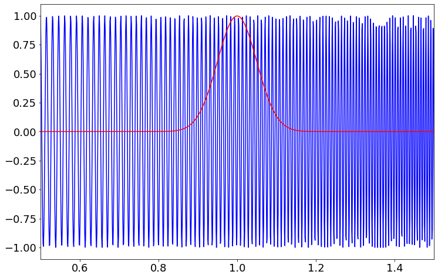

Amalkrishnaur
Created: 2021-10-24 Sun 17:54
1 What is space?
- When we think of space we think about space where we live but in mathematics it more then that In mathamatics any generic abstract collection of elements are called space
2 Function Space
- Space of all possible function F(x)
- Idea is come from linear algebra
- It is like vector space with infinit dimenstions
2.1 Hilbert space
Space all possible wave functions
3 Vectors
Figure 1: This is Vector
- It has both dirction and magnitude
3.1 Vectors
3.2 Component reprasentation
- \(\vec a\) = x\(\hat i\) + y\(\hat j\) + z \(\hat k\)
- Also i can write this way
- \(\vec a\) = \(\frac{\vec a . \hat i}{||\hat i||^2}\) + \(\frac{\vec a . \hat j}{||\hat j||^2}\) + \(\frac{\vec a . \hat k}{||\hat k||^2}\)
4 cordinate transformation
4.1 cordinate transformation
- I can write p interms of x and y
- \(\vec p\) = \(\frac{\vec p . x}{||x||^2}\) + \(\frac{\vec p . y }{||y||^2}\)
- I can alse write in terms of x' and y'
- \(\vec p\) = \(\frac{\vec p . x'}{||x'||^2}\) + \(\frac{\vec p . y' }{||y'||^2}\)
- here dot product give projection on to each axis and tell how much that vector in point in x dirction
- Also when dot product is zero the vectors are in orthogonal to each other
5 Inner product of functions
- It is just like dot product between two vectors
- A function can be thought as vector of infinit dimenstion
- For defining innerproduct just descritize our functions f and g in some intervel a and b
- We have \(\begin{bmatrix}f_1 & f_2 & \ldots & f_n \end{bmatrix}\) and \(\begin{bmatrix}g_1 & g_2 & \ldots & g_n \end{bmatrix}\) Now we can find innerproduct of this it just two vectors
5.1 Inner product continue
- Now the innerproduct is
- \[\sum_{k=0}^{n-1} f_kg_k\]
- This as one problem when n increses this changes by huge amound so we need to normalize this by \(\Delta\) x
5.2 Inner product continue
- Now after normalization by \(\Delta\) x the equation become
- \[\sum_{k=0}^{n-1} f_kg_k\Delta x\]
- This is Riemann approximation of inegral
5.3 Innerproduct
- Now the equation become
- <f(x),g(x)> = \(\int_a^b\) f(x)g(x) dx
5.4 Inner product matlab
clear all, close all, clc
f = [0 0 .1 .2 .25 .2 .25 .3 .35 .43 .45 .5 .55 .5 .4 .425 .45 .425 .4 .35 .3 .25 .225 .2 .1 0 0];
g = [0 0 .025 .1 .2 .175 .2 .25 .25 .3 .32 .35 .375 .325 .3 .275 .275 .25 .225 .225 .2 .175 .15 .15 .05 0 0] -0.025;
x = 0.1*(1:length(f));
xf = (.01:.01:x(end));
ff = interp1(x,f,xf,'cubic')
gf = interp1(x,g,xf,'cubic')
plot(xf(20:end-10),ff(20:end-10),'k','LineWidth',1.5)
hold on
plot(x(2:end-1),f(2:end-1),'bo','MarkerFace','b')
plot(xf(20:end-10),gf(20:end-10),'k','LineWidth',1.5)
plot(x(2:end-1),g(2:end-1),'ro','MarkerFace','r')
xlim([.1 2.7])
ylim([-.1 .6])
set(gca,'XTick',[.2:.1:2.6],'XTickLabels',{},'LineWidth',1.2)
set(gca,'YTick',[]);
box off
set(gcf,'Position',[100 100 550 250])
set(gcf,'PaperPositionMode','auto')
print('-depsc2', '-loose', '../figures/InnerProduct');
% %%
% xc = x;
% fc = f;
% n = length(x);
% hold on
% fapx = 0*ff;
% dx = xc(2)-xc(1);
% L = xc(end)-xc(1);
% L = 2.5
% A0 = (1/pi)*sum(fc.*ones(size(xc)))*dx*L;
% fapx = fapx + A0/2;
% for k=1:10
% Ak = (1/pi)*sum(fc.*cos(2*pi*k*xc/L))*dx*L;
% Bk = (1/pi)*sum(fc.*sin(2*pi*k*xc/L))*dx*L;
%
% fapx = fapx + Ak*cos(2*k*pi*xf/L) + Bk*sin(2*k*pi*xf/L);
% end
% plot(xf,fapx,'k')
6 Orthogonal Functions
- In vectors to check orthogonality we do dot product if dot product is zero then the vectors is orthogonal to each other
- \(\vec a.\vec b\) = |a||b|cos(\(\theta\)) = 0
- mean \(\theta\) = 90\(^{\circ}\)
- In functions we can do the same thing
6.1 Orthogonal Functions continue
- In function space if f and g are orthogonal to each other then innerproduct is zero
- \(\int_a^{b}\) f(x)g(x) dx = 0
6.2 Why Importent
- In vectorspace we represents vectors in terms of orthogonal basis
- Same can do in Function Space Represent any function interms of orthogonal functions
- One example of this is Fourier Transform
- It reprasent f(x) interms of orthogonal sins and cosins
7 Fourier Series
- It is a cordinate transformation
- It is made for solving heat equation in 1800s
- It decompose the signal f into sins and cosins
- sins and cosins are form a orthogonal basis for function space
7.1 Fourier Series
- Any periodic signals can be reprasent interms of sum of sins and cosins
- \[f(x) = \frac{A_0}{2} + \sum_{k=1}^{\infty} (A_k Cos(kx) + B_k Sin(kx))\]
7.2 FS continue
- It can be thought as ths
- f(x) = \(\sum_{k=0}^{\infty}\) (<f(x),cos(kx)> \(\frac{cos(kx)}{||cos(kx)||^2}\) + <f(x),sin(kx)> \(\frac{sin(kx)}{||sin(kx)||^2}\))
7.3 Fs
- Ak = \(\frac{1}{||cos(kx)||^2}\) <f(x),cos(kx)>
- Bk = \(\frac{1}{||sin(kx)||^2}\) <f(x),sin(kx)>
- ||f(x)||2 = <f(x),f(x)>
7.4 Complex Fourier Series
- it uses complex exponential to reprasent signal
- Coefficient can be found exactly same as that of fourier series
- project function into each complex exponential basis you get the coefficient ck
7.5 Reprasentation
- \[ f(x) = \sum_{k=-\infty}^{\infty} C_k e^{j\omega_0 kt}\]
- Ck = \(\frac{1}{2\pi}\) <f(x),ejkω0 t>
7.6 Example
- Assume we have a signal f(x) = 3sin(x) + 3cos(x) then it will look like this
7.7 Matlab
clear all, close all, clc
kmax = 7;
dx = 0.001;
L = pi;
x = (-1+dx:dx:1)*L;
f = 0*x;
n = length(f);
nquart = floor(n/4);
nhalf = floor(n/2);
f(nquart:nhalf) = 4*(1:nquart+1)/n;
f(nhalf+1:3*nquart) = 1-4*(0:nquart-1)/n;
subplot(3,1,1)
plot(x,f,'-','Color',[0 0 0],'LineWidth',1.5)
ylim([-.2 1.5])
xlim([-1.25*L 1.25*L])
set(gca,'LineWidth',1.2)
set(gca,'XTick',[-L 0 L],'XTickLabels',{});%{'-L','0','L','2L'})
set(gca,'YTick',[0 1],'YTickLabels',{});
box off
CC = colormap(jet(8));
% CCsparse = CC(5:5:end,:);
% CCsparse(end+1,:) = CCsparse(1,:);
CCsparse = CC(1:3:end,:);
%
subplot(3,1,2)
L = pi;
A0 = sum(f.*ones(size(x)))*dx;
plot(x,A0+0*f,'-','Color',CC(1,:)*.8,'LineWidth',1.2);
hold on
fFS = A0/2;
for k=1:kmax
A(k) = sum(f.*cos(pi*k*x/L))*dx;
B(k) = sum(f.*sin(pi*k*x/L))*dx;
plot(x,A(k)*cos(k*pi*x/L),'-','Color',CC(k,:)*.8,'LineWidth',1.2);
% plot(x,B(k)*sin(2*k*pi*x/L),'k-','LineWidth',1.2);
fFS = fFS + A(k)*cos(k*pi*x/L) + 0*B(k)*sin(k*pi*x/L);
end
ylim([-.7 .7])
xlim([-1.25*L 1.25*L])
set(gca,'LineWidth',1.2)
set(gca,'XTick',[-L 0 L],'XTickLabels',{});%{'-L','0','L','2L'})
set(gca,'YTick',[-.5 0 .5],'YTickLabels',{});
box off
%
subplot(3,1,1)
hold on
plot(x,fFS,'-','Color',CC(7,:)*.8,'LineWidth',1.2)
l1=legend(' ',' ')
set(l1,'box','off');
l1.FontSize = 16;
subplot(3,1,3)
A0 = sum(f.*ones(size(x)))*dx;
plot(x,A0+0*f,'-','Color',CC(1,:),'LineWidth',1.2);
hold on
fFS = A0/2;
for k=1:7
Ak = sum(f.*cos(pi*k*x/L))*dx;
Bk = sum(f.*sin(pi*k*x/L))*dx;
plot(x,Ak*cos(k*pi*x/L),'-','Color',CC(k,:)*.8,'LineWidth',1.2);
% plot(x,Bk*sin(2*k*pi*x/L),'k-','LineWidth',1.2);
fFS = fFS + Ak*cos(k*pi*x/L) + 0*Bk*sin(k*pi*x/L);
end
ylim([-.06 .06])
xlim([-1.25*L 1.25*L])
set(gca,'LineWidth',1.2)
set(gca,'XTick',[-L 0 L],'XTickLabels',{});%{'-L','0','L','2L'})
set(gca,'YTick',[-.05 0 .05],'YTickLabels',{});
box off
set(gcf,'Position',[100 100 550 400])
set(gcf,'PaperPositionMode','auto')
print('-depsc2', '-loose', '../figures/FourierTransformSines');
%% Plot amplitudes
clear ERR
clear A
fFS = A0/2;
A(1) = A0/2;
ERR(1) = norm(f-fFS);
kmax = 100;
for k=1:kmax
A(k+1) = sum(f.*cos(2*pi*k*x/L))*dx*2/L;
B(k+1) = sum(f.*sin(2*pi*k*x/L))*dx*2/L;
% plot(x,B(k)*sin(2*k*pi*x/L),'k-','LineWidth',1.2);
fFS = fFS + A(k+1)*cos(2*k*pi*x/L) + 0*B(k+1)*sin(2*k*pi*x/L);
ERR(k+1) = norm(f-fFS)/norm(f);
end
thresh = median(ERR)*sqrt(kmax)*4/sqrt(3);
r = max(find(ERR>thresh));
r = 7;
subplot(2,1,1)
semilogy(0:1:kmax,A,'k','LineWidth',1.5)
hold on
semilogy(r,A(r+1),'bo','LineWidth',1.5)
xlim([0 kmax])
ylim([10^(-7) 1])
subplot(2,1,2)
semilogy(0:1:kmax,ERR,'k','LineWidth',1.5)
hold on
semilogy(r,ERR(r+1),'bo','LineWidth',1.5)
xlim([0 kmax])
ylim([3*10^(-4) 20])
set(gcf,'Position',[100 100 500 300])
set(gcf,'PaperPositionMode','auto')
% print('-depsc2', '-loose', '../figures/FourierTransformSinesERROR');
8 Fourier Transform
- Fourier series is for periodic signals
- If signal is not periodic then we can't use fourier series
- Fourier transform is limiting case of fourier series when L \(\to\) \(\infty\)
8.1 FT
- \[ f(x) = \frac{1}{2\pi} \int_{-\infty}^{\infty} F(\omega)e^{j\omega x} dx \]
- \[ F(\omega) = \int_{-\infty}^{\infty} f(x)e^{-j\omega x} d\omega \]
8.2 Work in progress
9 Descrete Fourier Transform
- In real life the data sould be in measuremnts in some time
- We get time series insted of nice continues function
- So the descrete fourier transform is descritized version of fourier transform
9.1 DFT
- In dft the integration become summation
- DFT
- F(k) = \(\sum_{n=0}^{N-1}\) fn e-2π n \(\frac{k}{N}\)
- k ∈ 0 to N-1
9.2 Inverse DFT
- To come back to time series
- f(n) =\(\frac{1}{N}\) \(\sum_{k=0}^{N-1}\) Fk e2π k \(\frac{n}{N}\)
- n ∈ 0 to N-1
9.3 DFT
- let ωn = e-j\(\frac{2\pi}{N}\)
- Then we can reprasent DFT in matrix form
9.4 Matrics form
\[ \begin{pmatrix} F_0\\F_1\\ \vdots \\F_{n-1} \end{pmatrix} = \begin{bmatrix} 1 & 1 & \ldots & 1 \\ 1 & \omega & \ldots & \omega^{N-1} \\ \vdots & \vdots & \vdots & \vdots \\ 1 & \omega^{n-1} & \ldots & \omega^{(N-1)^2} \end{bmatrix} \begin{pmatrix} f_0 \\ f_1 \\ \vdots \\ f_{N-1} \end{pmatrix} \]
9.5 Beauty of matrices
- DFT matrix
- \[ \begin{bmatrix} 1 & 1 & \ldots & 1 \\ 1 & \omega & \ldots & \omega^{N-1} \\ \vdots & \vdots & \vdots & \vdots \\ 1 & \omega^{n-1} & \ldots & \omega^{(N-1)^2} \end{bmatrix} \]
9.6 Matlab code for DFT matrix
clear all, close all, clc
n = 256;
w = exp(-i*2*pi/n);
% Slow
for i=1:n
for j=1:n
DFT(i,j) = w^((i-1)*(j-1));
end
end
% Fast
[I,J] = meshgrid(1:n,1:n);
DFT = w.^((I-1).*(J-1));
imagesc(real(DFT))
9.7 Matlab Gibbs phenomena
clear all, close all, clc
kmax = 7;
dx = 0.001;
L = pi;
x = (-1+dx:dx:1)*L;
f = 0*x;
n = length(f);
nquart = floor(n/4);
nhalf = floor(n/2);
f(nquart:nhalf) = 4*(1:nquart+1)/n;
f(nhalf+1:3*nquart) = 1-4*(0:nquart-1)/n;
subplot(3,1,1)
plot(x,f,'-','Color',[0 0 0],'LineWidth',1.5)
ylim([-.2 1.5])
xlim([-1.25*L 1.25*L])
set(gca,'LineWidth',1.2)
set(gca,'XTick',[-L 0 L],'XTickLabels',{});%{'-L','0','L','2L'})
set(gca,'YTick',[0 1],'YTickLabels',{});
box off
CC = colormap(jet(8));
% CCsparse = CC(5:5:end,:);
% CCsparse(end+1,:) = CCsparse(1,:);
CCsparse = CC(1:3:end,:);
%
subplot(3,1,2)
L = pi;
A0 = sum(f.*ones(size(x)))*dx;
plot(x,A0+0*f,'-','Color',CC(1,:)*.8,'LineWidth',1.2);
hold on
fFS = A0/2;
for k=1:kmax
A(k) = sum(f.*cos(pi*k*x/L))*dx;
B(k) = sum(f.*sin(pi*k*x/L))*dx;
plot(x,A(k)*cos(k*pi*x/L),'-','Color',CC(k,:)*.8,'LineWidth',1.2);
% plot(x,B(k)*sin(2*k*pi*x/L),'k-','LineWidth',1.2);
fFS = fFS + A(k)*cos(k*pi*x/L) + 0*B(k)*sin(k*pi*x/L);
end
ylim([-.7 .7])
xlim([-1.25*L 1.25*L])
set(gca,'LineWidth',1.2)
set(gca,'XTick',[-L 0 L],'XTickLabels',{});%{'-L','0','L','2L'})
set(gca,'YTick',[-.5 0 .5],'YTickLabels',{});
box off
%
subplot(3,1,1)
hold on
plot(x,fFS,'-','Color',CC(7,:)*.8,'LineWidth',1.2)
l1=legend(' ',' ')
set(l1,'box','off');
l1.FontSize = 16;
subplot(3,1,3)
A0 = sum(f.*ones(size(x)))*dx;
plot(x,A0+0*f,'-','Color',CC(1,:),'LineWidth',1.2);
hold on
fFS = A0/2;
for k=1:7
Ak = sum(f.*cos(pi*k*x/L))*dx;
Bk = sum(f.*sin(pi*k*x/L))*dx;
plot(x,Ak*cos(k*pi*x/L),'-','Color',CC(k,:)*.8,'LineWidth',1.2);
% plot(x,Bk*sin(2*k*pi*x/L),'k-','LineWidth',1.2);
fFS = fFS + Ak*cos(k*pi*x/L) + 0*Bk*sin(k*pi*x/L);
end
ylim([-.06 .06])
xlim([-1.25*L 1.25*L])
set(gca,'LineWidth',1.2)
set(gca,'XTick',[-L 0 L],'XTickLabels',{});%{'-L','0','L','2L'})
set(gca,'YTick',[-.05 0 .05],'YTickLabels',{});
box off
set(gcf,'Position',[100 100 550 400])
set(gcf,'PaperPositionMode','auto')
print('-depsc2', '-loose', '../figures/FourierTransformSines');
%% Plot amplitudes
clear ERR
clear A
fFS = A0/2;
A(1) = A0/2;
ERR(1) = norm(f-fFS);
kmax = 100;
for k=1:kmax
A(k+1) = sum(f.*cos(2*pi*k*x/L))*dx*2/L;
B(k+1) = sum(f.*sin(2*pi*k*x/L))*dx*2/L;
% plot(x,B(k)*sin(2*k*pi*x/L),'k-','LineWidth',1.2);
fFS = fFS + A(k+1)*cos(2*k*pi*x/L) + 0*B(k+1)*sin(2*k*pi*x/L);
ERR(k+1) = norm(f-fFS)/norm(f);
end
thresh = median(ERR)*sqrt(kmax)*4/sqrt(3);
r = max(find(ERR>thresh));
r = 7;
subplot(2,1,1)
semilogy(0:1:kmax,A,'k','LineWidth',1.5)
hold on
semilogy(r,A(r+1),'bo','LineWidth',1.5)
xlim([0 kmax])
ylim([10^(-7) 1])
subplot(2,1,2)
semilogy(0:1:kmax,ERR,'k','LineWidth',1.5)
hold on
semilogy(r,ERR(r+1),'bo','LineWidth',1.5)
xlim([0 kmax])
ylim([3*10^(-4) 20])
set(gcf,'Position',[100 100 500 300])
set(gcf,'PaperPositionMode','auto')
% print('-depsc2', '-loose', '../figures/FourierTransformSinesERROR');
9.8 Work in progres
10 FFT
- FFT is anlgorithm to compute DFT fast and efficiently
- It uses symetry in DFT
- To compute DFT Without FFT it require O(n2) but FFT require only O(nlog(n))
10.1
11 Gabor Transform
11.1 Limitations of Fourier transform
- FT is good for repreasenting smooth signal when there is sudden jump or discontinuity then it is not capture very well Gibbs phenomena
- FT is good for stationary signal
- Stationary means frequency of signal not change with time
- When we compute Fourier Transform we loss all of time information so we can't say when this frequency occured
- non stationary signals example is audio signal which frequency changes with time
11.2 Gabor transform
- it solve the problem of FT
- Gabor Transfom allow us to compute spectrogram a time frequency plot
- Also called windowed FT
- We take a window function multiply with the signal and translate the signal to get gabor transform
11.3 Gabor transform
- pull out both time and frequency content
- instead of computinf FT of entire signal we devide into several sections and compute FT of each section
- Mathamaticaly we can write
- \[ G(f(t)) = \int_{\infty}^{\infty} f(\tau)e^{-i \omega \tau} g(\tau - t) d \tau \]
- g is the window function it can be gaussian or rectangular
- We can't know what frequency exist at what time instead but we can know what frequency band exist at what time
11.4 picture
- gabor grid
11.5 Problems of gabor transform
- Uncertainity principle
- It tells about when when you narrow the window you get better time resalution but you get poor frequency resalution
- when you stretch the window you get better frquency inforation but poor time information
- uncertainity principle tell us
- Δ t Δ f ≥ \(\frac{1}{4 \pi}\)
11.6 matlab code for spectrogram
clear all, close all, clc
n = 128;
L = 30;
dx = L/(n);
x = -L/2:dx:L/2-dx;
f = cos(x).*exp(-x.^2/25); % Function
df = -(sin(x).*exp(-x.^2/25) + (2/25)*x.*f); % Derivative
%% Approximate derivative using finite Difference...
for kappa=1:length(df)-1
dfFD(kappa) = (f(kappa+1)-f(kappa))/dx;
end
dfFD(end+1) = dfFD(end);
%% Derivative using FFT (spectral derivative)
fhat = fft(f);
kappa = (2*pi/L)*[-n/2:n/2-1];
kappa = fftshift(kappa); % Re-order fft frequencies
dfhat = i*kappa.*fhat;
dfFFT = real(ifft(dfhat));
%% Plotting commands
plot(x,df,'k','LineWidth',1.5), hold on
plot(x,dfFD,'b--','LineWidth',1.2)
plot(x,dfFFT,'r--','LineWidth',1.2)
legend('True Derivative','Finite Diff.','FFT Derivative')
11.7 beethoven code matlab
clear all, close all, clc
% If you download mp3read, you can use this code
% also, need to download mp3read from
% http://www.mathworks.com/matlabcentral/fileexchange/13852-mp3read-and-mp3write
% [Y,FS,NBITS,OPTS] = mp3read('../../DATA/beethoven.mp3'); % add in your own song
% T = 40; % 40 seconds
% y=Y(1:T*FS); % First 40 seconds
load ../../DATA/beethoven_40sec.mat
%% Spectrogram
spectrogram(y,5000,400,24000,24000,'yaxis');
%% SPECTROGRAM
% uncomment remaining code and download stft code by M.Sc. Eng. Hristo Zhivomirov
% wlen = 5000;
% h=400; % Overlap is wlen - h
% % perform time-frequency analysis and resynthesis of the original signal
% [S, f, t_stft] = stft(y, wlen, h, FS/4, FS); % y axis range goes up to 4000 HZ
% imagesc(log10(abs(S)));
% load CC.mat
% colormap(ones(size(CC))-(CC))
%
% axis xy, hold on
% XTicks = [1 300 600 900 1200 1500 1800 2100];
% XTickLabels = {'0','5','10','15','20','25','30','35'};
% YTicks = [0 1000 2000 3000];
% YTickLabels = {'0','4000','8000','12000'};
% set(gca,'XTick',XTicks,'XTickLabels',XTickLabels);
% set(gca,'YTick',YTicks,'YTickLabels',YTickLabels);
%
% % plot a frequency
% freq = @(n)(((2^(1/12))^(n-49))*440);
% freq(40) % frequency of 40th key = C
11.8 Idea

12 Wavelet Transform
- supercharged Fourier transform
- Generalize Fourier transform
- Reprasent signals interms of other orthogonal functions
12.1 Wavelet
- Wavelets are new basis functions also act as window function
- Wavelets are some wave like oscilationg functions in limited durations
- There are somany wavelets are avialable
- Wavelets are lmited duration so we need to translate it
12.2 Haar Wavelet

12.3 Mother Wavelet
- It is a function which acts as basis for creating orthogonal functios
- Example if ψ (a,b) is mother wavelets then we can create orthogonal wavelets by scaling
- Since wavelets are localized we need to translate it
12.4 Properties of wavelets
12.4.1 Scaling
- it compress or sretch wavelets
- Scaling factor "a" is inversly proportional to frequency
- Small "a" Wavelets capture high frequency
- orthogonal wavelets are \(\frac{1}{2 \sqrt[2] a}\) ψ(\(\frac{t}{a}\))
12.4.2 Translation
- Since wavelets are localized we translate it with "b"
- So "b" moves the wavelets left or right
- Now the wavelets become \(\frac{1}{2 \sqrt[2] a}\) ψ (\(\frac{t-b}{a}\)) This are orthogonal to each other
- You can prove this by innerproduct
12.5 CWT
- Now we have basis function to calculate coefficient only we need to project the function into basis
- So mathamatically continues wavelet transform become
- \[ W(a,b) = \frac{1}{2 \sqrt[2] a} \int_{-\infty}^{\infty} f(t) \psi^* (\frac{t-b}{a}) \]
- Use wavemenu in matlab
12.6 CWT